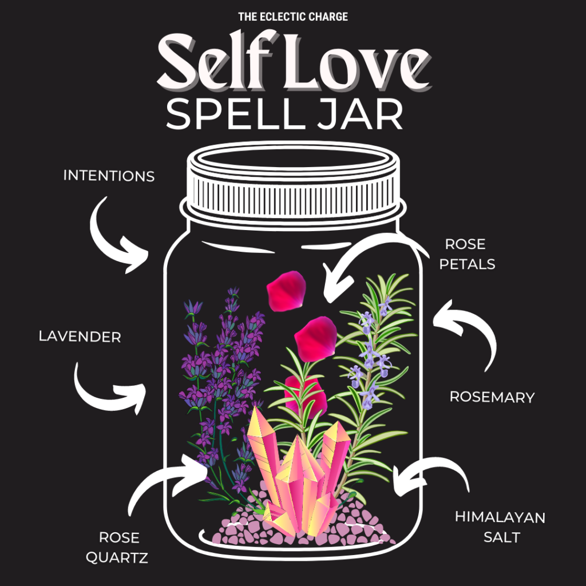
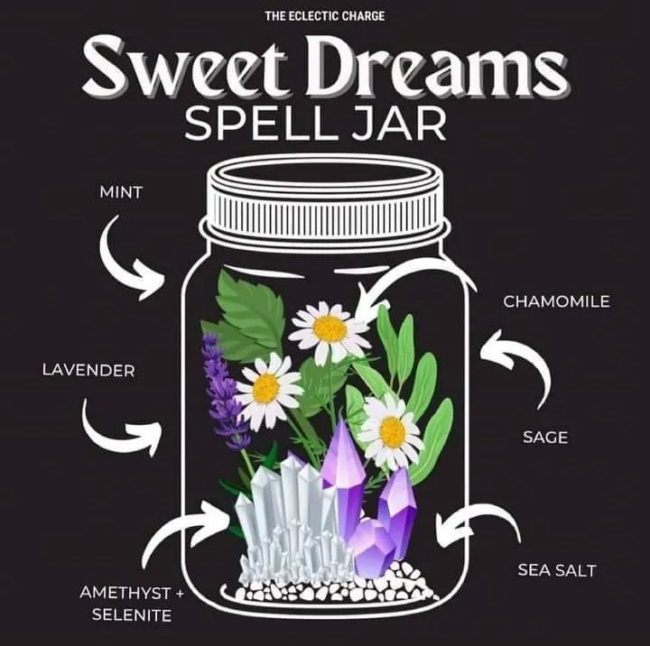
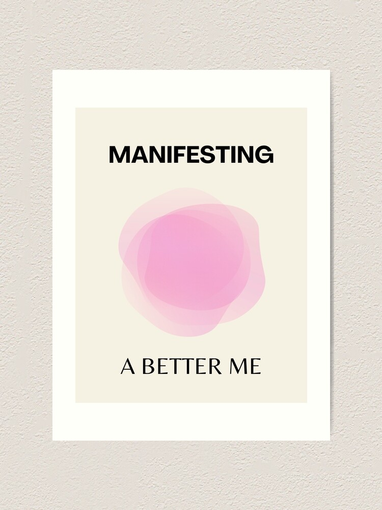

|  |
Spell Jars (auf Deutsch auch manchmal Glaszauber genannt) sind kleine Glasfläschchen, die man mit Kräutern, Blüten und anderen Materialien befüllt, um einen Zauber durchzuführen. Das Wort Zauber klingt vielleicht etwas nach Märchen. Man könnte auch sagen, dass die Dinge im Jar bewusst nach ihren Eigenschaften und Symbolen ausgewählt werden, um die Intention (aka den Zauber) zu repräsentieren. Du kannst ins Spall Jar tun, was auch immer du möchtest. Vielleicht fühlst du dich besonders hexig wenn du Krähenfüße und Krötenbeine rein tust (ich wüsste allerdings gar nicht genau, wo man die bekommt), aber du kannst dich auch in der Küche, im Garten oder im Wald umschauen. Wir nutzten die folgenden Zutaten für unsere Spells: |
 |
|  |
Gleiches zieht Gleiches an - der spirituelle Blickwinkel In der spirituellen Sichtweise dreht sich alles um Energie. Jeder Gedanke, jede Emotion, ja sogar unser Körper und die Materie um uns herum – alles ist Energie. Und als solche schwingt sie in einer bestimmten Frequenz. Zum Beispiel: Emotionen wie Trauer und Scham haben eine geringe Frequenz, während Freude und Dankbarkeit auf hoher Frequenz schwingen. Jetzt kommt der Knackpunkt: Laut des Gesetzes der Anziehung zieht Gleiches Gleiches an. Das heißt: Wenn Du eine bestimmte Frequenz aussendest, dann kommen Dinge, Menschen und Erlebnisse in Dein Leben, die auf derselben Frequenz schwingen. Wenn Du also die Überzeugung aussendest „Ich bin reich.“, kommt Geld wie von allein zu dir. Manifestieren funktioniert demnach wie eine „Bestellung beim Universum“. Du sendest eine Frequenz-Bestellung ab, lehnst Dich zurück - und das Universum schickt Dir Deine Order. Wie sendest Du diese Energie-Frequenzen aus? Indem Du visualisierst. Du stellst Dir Deinen Wunsch so detailliert wie möglich vor und spürst dabei bewusst die Emotionen, als wäre es jetzt schon Wirklichkeit. So stellst Du Deine Frequenz auf diese Wirklichkeit ein – und Dein Wunsch darf Dich durch die energetische Passung finden. |